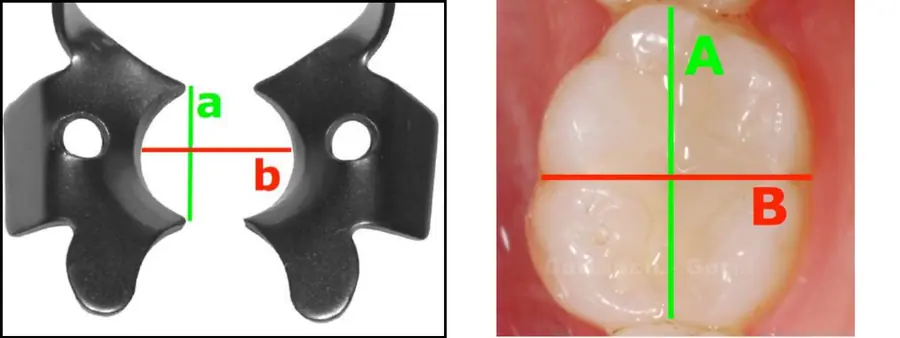

نسخه استخراجشده؛ ترجمه یا تأیید علمی انجام نشده است. وضعیت: captured
بیمار برای درمان ریشهی مولر دوم بالا آمده و دندان آشکارا کوچکتر از مولر اول است. دستیار یک کلمپ مولر آورده، ولی وقتی آن را باز نشده کنار دندان میگیری، فاصلهی دو نقطهی هر فک از عرض مزیودیستال دندان بیشتر است. این کلمپ روی این دندان چه میکند؟

انتخاب کلمپ مهمترین لحظهی ایزولاسیون است؛ پایداری میدان در تمام درمان به آن بسته است. کلمپ را پس از تعیین وسعت ایزولاسیون و پیش از سوراخ کردن ورق انتخاب کن.
برچسب «مولر» یا «پرمولر» تصمیمگیرنده نیست. روی مولر دوم کوچک بالا، کلمپ پرمولر ممکن است تنها کلمپی باشد که هر چهار نقطهاش همزمان مینشیند.
کلمپ نامناسب معمولاً یا از دندان کوچکتر است یا بزرگتر، و هر کدام مشکل خودش را دارد.
پایداری کلمپ را دو چیز تعیین میکند: فاصلهی دو نقطهی هر فک و سفتی کمان. برای همین لبهی فک کلمپهای مولر میان دو نقطه قوس برجستهای دارد تا حتی روی گردن خیلی محدب مولر فقط نقطهها دندان را لمس کنند.
اشتباه رایج: «کلمپ بزرگتر محکمتر میگیرد.» گیر از باز شدن فکها روی دندان میآید، نه از بزرگی کلمپ. فک و نوکها میتوانند لثه را کمی فرو ببرند، ولی نباید آن را سوراخ یا پاره کنند.